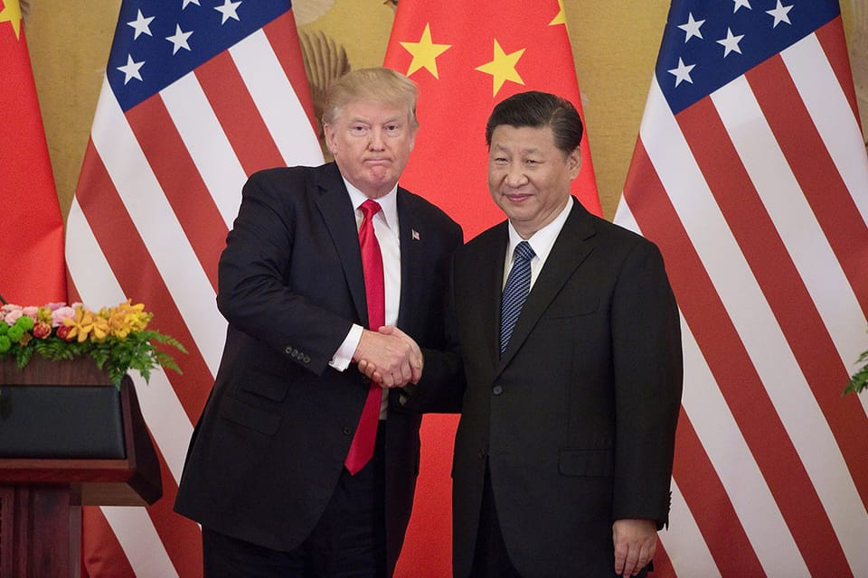

世界苦茶10月30日新闻 | 33条 | 习特会开始

习特会开始 | 四中全会被跳过文官现身正常工作 | 美联储再次降息 | 哈马斯与以色列停火协议陷入危机 | 荷兰大选遏制极右翼党脚步
苦茶数据
美元兑人民币：7.09（昨日7.10，前日7.09）
美元兑日元：152.49（昨日151.84，前日151.84）
上证指数：4017（昨日3995，前日3999）
标普500指数：6890（昨日6890，前日6875）
比特币：110929（昨日112629，前日113824）
布伦特原油：64.53（昨日64.36，前日65.39）
中国新闻
• 中印两军举行边境西段将军级会谈。
中印两军举行边境西段将军级会谈，这是自今年8月举行中印特别代表会谈以来，双方在西段地区举行的首次将军级会议。中国国防部星期三发布新闻稿说，中印两军上星期六在莫尔多／楚舒勒会晤点印方一侧举行边境西段第23轮将军级会谈。双方就中印边境西段管控问题进行积极深入沟通，同意以两国领导人重要共识为指引，继续通过军事和外交渠道保持沟通对话，共同维护好中印边境地区和平安宁。印度外交部同天也发新闻稿说，会谈在友好、融洽的气氛中进行。双方一致认为，中印边境地区保持和平与安宁，并同意继续利用现有机制，解决边境沿线任何可能出现的地面问题，以维护地区稳定。中印两军2020年6月在边境西段的加勒万河谷爆发流血冲突后。
• 中共四中全会递补中央委员 被“跳过”三文官现身正常工作。
中共二十届四中全会上，多达八名中央候补委员在递补中央委员时被“跳过”，引起外界猜测。除了身处整肃风暴中心的五名军方将领外，其余三名文职中央候补委员陆续公开现身，显示他们仍正常工作。中共二十届四中全会上周四闭幕。根据公报，全会递补11名中央候补委员为中央委员，有八人遭“跳过”未依序被递补，包括中国教育部副部长王嘉毅、中共西安市委书记方红卫和云南省政协党组副书记石玉钢。另外五人则全部来自军队。英国广播公司上周四引述美国大西洋理事会中国研究员宋文笛分析称，“他们有不低概率正在被调查中”。不过上述三名被“跳过”的文职中央候补委员，上周五起陆续公开露面，显示仍在正常工作。
• 分析人士称，中国下一步五年规划旨在缩小与美俄的核力量差距。
分析人士称，中国下一个五年规划旨在缩小与美俄的核差距，北京拟定的国家蓝图首次将战略力量与全球平衡联系起来。该提案周二公布，内容包括承诺“加强战略威慑能力，维护全球战略平衡与稳定”。“战略威慑”通常被理解为核力量，此术语曾出现在以往和现行的中国政府文件中。习近平在2022年党的大会报告中表示，中国将“建设强大的战略威慑体系”。而在2021年，十四五规划建议中也提出要“建设高水平的战略威慑能力”。不过，这是此类文件首次明确将核力量建设与维护“全球战略平衡与稳定”相联。
• 五年计划显示，中国在对抗美国的同时谋求成为全球海上强国。
中国的新五年规划勾勒出成为全球海洋强国的方向，并着力应对美国的意图 在第四次全会强调“具有中国特色的现代化”并在地缘政治紧张加剧之际，重申海洋发展 中国雄心勃勃的五年战略蓝图披露了该国成为全球海洋强国的计划，承诺巩固海洋周边安全，同时应对美国的制裁和其他被视为外部安全威胁。在通过协调国内外战略推进“具有中国特色的现代化”同时，该计划在地缘政治紧张上升的背景下，特别强调了海洋发展和涉外国家安全，重点涉及南海和东海问题。文件突出了北京在中美关系紧张之际，旨在将自身定位为捍卫国家利益并提供不同于华盛顿主导治理模式的全球大国的目标。具体而言，文件提出在未来几年加速推进中国的“海洋强国”战略，重点是陆海。
印太新闻
• 特朗普称未能找到合适时间会晤金正恩。
特朗普称未能找到合适时间会晤金正恩 2025年10月29日特朗普“非常希望”在亚洲之行期间会晤金正恩，但苦于未能找到合适的时间。就在他出行之前，朝鲜试射了巡航导弹。特朗普周三表示，本次访问韩国期间，将无法安排与朝鲜领导人金正恩会面。此前他曾说过，“非常希望”在亚洲之行期间能与金正恩会晤。如果成行，这便是特朗普第二次入主白宫后首次特金会，不过，朝鲜方面一直没有公开回应美方的邀请。人们注意到，特朗普的亚洲之行开始几个小时之前，平壤宣布在其西部沿海试射了巡航导弹，朝鲜声称，这是向敌人发出警告。
• 高市以美国产白米和牛肉招待川普。
东京元赤坂迎宾馆举行的午餐会上，日本首相高市早苗用美国产白米和牛肉菜肴招待了美国总统川普等美方代表团。还提供了高市的家乡奈良县的蔬菜和水果。午餐会上提供了用鸡肉和美国白米制作的起司烩饭、配上大和传统蔬菜的美国牛肉制成的牛排、混合水果果冻等。美国驻日大使格拉斯在X上发文称，「伙伴关系也体现在午餐上」。
• 日本丰明市出台每天使用手机2小时条例后，效果怎样。
日本爱知县丰明市10月22日表示，围绕建议智慧手机使用时间控制在每天2小时以内的条例，对部分市民实施了问卷调查，结果显示，关于10月1日该条例施行后手机使用时间的变化，回答「没有变化」的比例高达65.4％。仅7.1％的受访者表示「有变化」，27.5％的受访者称「虽无变化，但开始留意使用时长」。在被问及睡眠时间的变化时，84.6％的受访者回答「没有变化」，2.7％的人回答「有变化」。另一方面，39.0％的受访者表示，以该条例施行为契机，与家人的交流增加，或者开始重新审视自己的生活。
• 特朗普批准向韩国提供核潜艇。
特朗普称已批准韩国在美国建造核潜艇 特朗普表示，在该国的贸易谈判后，他已批准韩国建造一艘核动力潜艇，并在 Truth Social 发帖称“我们的军事同盟比以往任何时候都更强大。”他随后在另一条帖子中说，潜艇将于费城建造。“我们国家的造船业很快将强势回归，”他写道。目前尚不清楚该项目的时间表。这一消息此前出现于两国关于贸易和投资计划的声明之后。美韩确认，经数月贸易谈判后，首尔将向美国投资3500亿美元，并商定了这笔资金的分配方式。协议细节尚未全部公布，但韩国政府表示，其中1500亿美元将用于振兴美国造船业。对韩国商品的关税也将从25%降至15%。
科技新闻
• 大型科技公司在布鲁塞尔加大游说力度并投入大量欧元。
根据新的分析，随着对欧盟数字规则反对声日益增多，科技公司在游说欧盟方面的支出创历史新高。两家活动组织对欧盟透明度登记处披露信息的分析显示，在布鲁塞尔注册的733个数字行业团体目前每年为推动其利益花费1.51亿欧元，高于两年前的1.13亿欧元。此项增幅正值业界对《数字市场法》《数字服务法》等欧盟法律发动攻势之际——特朗普政府称这些法律歧视美国公司——同时欧盟委员会正准备大规模回撤其数字规则。
• YouTube在围绕AI重组时提供自愿离职方案。
YouTube正在为美国本土员工提供带遣散费的自愿离职方案，因其正重组产品组织以更加专注于人工智能。此举正值谷歌CEO桑达尔·皮查伊推动全体员工利用人工智能提升生产率之际。YouTube平台首席执行官尼尔·莫汉在给员工的内部备忘录中表示，该平台正在实施十年来首次的产品团队重组。“展望未来，YouTube的下一个前沿是AI，”发言人在向媒体提供的声明中表示。YouTube表示此次改革不会裁撤任何岗位。在新架构下，三个产品组将直接向首席执行官莫汉汇报。
• 在遭遇强烈反对之际，法国议员推进对美国大型科技公司的征税。
法国议员正推进将对大型科技公司的税率翻倍的计划——在担心引发美国贸易报复的压力下，放弃了更激进的推动。法国国民议会周二晚间投票通过，将针对谷歌、苹果、Meta 和亚马逊等科技公司的数字服务税从3%提高到6%。法国政府反对此举，经济部长罗兰·莱斯库尔警告称，“不成比例”的税收将导致“不成比例”的报复措施。
• 中国正逼近美国成为全球科学领域领导者。
针对近六百万篇研究论文的分析显示，中国科学家在与美国学者的合作研究中，已在近一半项目中担任主导角色，这一趋势凸显北京在全球科研议程中影响力的持续上升。这项于周二发表在《美国国家科学院院刊》的研究发现，2023年，中国科研人员在中美联合研究中担任主导的比例已达45%，较2010年的30%大幅上升。若这一趋势持续，中国有望在2027或2028年与美国持平，也就是两国在联合科研中分占相同的领导比例。这项研究由武汉大学、加州大学洛杉矶分校和芝加哥大学的研究团队共同完成。研究人员利用机器学习模型，通过分析论文作者署名顺序与贡献声明，判断项目的主导方。
经济新闻
• “正是我们所期待的”：随着中国恢复从美国购买大豆，人们既感到宽慰也保持谨慎。
在中国恢复购买美国大豆后，既感到宽慰也保持谨慎 农户称此举“令人鼓舞”，但在习近平与特朗普会谈前仍盼达成持久停战 特朗普政府称此举为对农民的“积极进展”，并吹捧这位“美国优先”领导人的成交能力。美国农业部长布鲁克·罗林斯在社交媒体上写道：“今天中国购买多船美国大豆，表明@POTUS 强大的成交能力，也是对我们农民的一个积极进展。” 关于该笔交易的最初报告存在一些混乱。部分种植者称此次采购“令人鼓舞”，并希望能达成持久协议；但也有一些人持怀疑态度，指出最初并无行业或中方官员的确认发布。对许多人而言，这仍是一个令人振奋的讯号，让他们得以松一口气。
• 特朗普示意将就 Blackwell 芯片与习近平会谈，令英伟达在中国的希望重燃。
周二在华盛顿举行的英伟达旗舰GTC大会间隙，黄仁勋表示“对特朗普总统有百分之百的信心，能为美国谈成一笔大交易”。他补充说：“如果能恢复——无论是特朗普能够谈妥，还是中国希望我们回去——对我们来说都会是巨大的额外收益。” 市场预期英伟达可能恢复向中国出口其先进的人工智能芯片，推动其股价在盘前交易中上涨逾3%。该股有望将这家美国芯片制造商的市值推向创纪录的5万亿美元，创企业史上最高。黄仁勋也警告称，英伟达在华的缺席最终可能对美国的伤害超过对中国，质疑华盛顿出口管制的长期逻辑。
**• 美联储10月29日再次降息25个基点，联邦基金利率目标区间调至3.75%至4.00%之间。 **
美联储决策机构联邦公开市场委员会声明称，现有指标显示，美国经济活动一直以温和的速度扩张，今年就业增长放缓，失业率略有上升，通胀率自年初以来有所上升，目前仍处于较高水平。鉴于风险平衡变化，决定将联邦基金利率目标区间下调25个基点。美联储主席鲍威尔在货币政策会议结束后举行的记者会上说，“联邦政府’停摆’将持续对经济活动构成压力”。不过，“停摆”结束后这些影响“将会逆转”。美联储12月货币政策会议进一步降息并非板上钉钉，情况“远非如此”。
• 中国副总理承诺进一步开放金融业。
中国副总理承诺进一步开放金融业 中国副总理何立峰表示，中国将继续扩大金融业的“高水平开放”，欢迎更多外国金融机构和长期资本的投资。何立峰在周二公布的一份声明中说：“中国将坚定不移扩大金融领域高水平对外开放，加快建设现代金融强国。” 何立峰是在周二于北京与国家金融监督管理总局国际咨询委员会会晤时发表上述言论的。该委员会由在任及历任外国金融机构和机构的领导人组成。声明称，何立峰还欢迎更多外国金融机构深化与中国的合作。声明称，委员会成员对中国的经济和金融前景表示乐观，表示愿继续培育中国市场，进一步扩大对华投资与合作。
• 全球市值最高的公司刚刚轻松突破了一个前所未有的里程碑。
英伟达刚成为全球首家市值达5万亿美元的公司。对其人工智能芯片的前所未有需求将公司市值推向云霄。该里程碑在周三开盘时达成，距离公司突破4万亿美元仅三个月。英伟达从3万亿升至4万亿美元约用了13个月。周三开盘后公司股价上涨3%。英伟达股价在2025年已上涨约50%，并在标普500表现最佳股票中多年位居前列，因对人工智能的投资持续推动这家芯片制造商的飞速上升。推高周三英伟达股价的还有人们对美国总统唐纳德·特朗普与中国国家主席习近平可能就向英伟达开放中国市场高端AI芯片进行磋商的期待。
俄乌战争
• 匈牙利搁置欧盟将对白俄罗斯定性为“混合战争”。
欧盟就白俄罗斯问题达成共同立场的努力陷入停滞数日。白俄向立陶宛越境发射的一波气球导致飞机停飞并引发边境关闭，欧盟本欲就此以27国名义发表声明，但匈牙利试图淡化措辞，令谈判受阻。立陶宛警告称这些气球行为相当于“混合战争”手段。白俄罗斯的威权领导层是俄罗斯的紧密盟友，已被指控将不规则移民工具化以在欧盟内部制造动荡，并因此面临制裁和国际谴责。然而，据一名外交官和两名在闭门会谈中获准匿名向POLITICO发言的官员透露，匈牙利正游说欧盟不要公布其对这些气球飞行构成试图破坏欧盟国家稳定的评估。
• 乌克兰军方撤回此前称俄军已进入顿涅茨克州米尔诺赫拉德郊区的说法。
乌克兰军方收回关于俄军进入顿涅茨克州米尔诺赫拉德市郊的说法 乌克兰东部兵团10月28日称，俄军已进入顿涅茨克州米尔诺赫拉德镇的郊区，但该说法在次日被否认。米尔诺赫拉德位于波克罗夫斯克区，东面毗邻波克罗夫斯克市，后者长期是俄方在该地区进攻的主要目标。东部兵团通信部门发言人赫里霍里·沙波瓦尔于10月28日在国家电视台报道说，俄军已到达该镇郊区，目前正进行街区战。“目前，不幸的是，敌军已进入米尔诺赫拉德的郊区，并且不仅使用炮兵和无人系统，还使用步兵和技术手段，”沙波瓦尔说。乌克兰部队正在努力固守阵地并构筑防御工事，但“形势相当艰难”，他补充道。沙波瓦尔称，激烈的街区战仍在继续。
• 印度与被制裁的俄罗斯公司合作生产客机。
印度国有的印度斯坦航空有限公司于10月27日在莫斯科与俄罗斯联合飞机制造公司签署协议，共同生产SJ-100民用客机。该协议将授予印度在国内制造SJ-100的权利，标志着印度首次完全在本国生产客机。莫迪所在政党全国信息与技术部负责人阿米特·马尔维亚称该交易为“具有历史意义的第一次”。“有了这个，印度进入了长期由空中客车和波音主导的全球民用航空市场——打破了它们的近乎垄断，”他写道。UAC因其在俄罗斯军工体系中的角色而受到美国，欧盟和英国的制裁。自2022年俄罗斯对乌克兰发动全面入侵以来，国际制裁限制了俄罗斯航空公司获得西方制造的备件。
• 乌克兰难民大量涌入，柏林与华沙出现强烈反弹。
德国和波兰是欧盟内拥有最多乌克兰难民的国家。随着基辅放宽出境规定，近几周大量乌克兰年轻男性进入两国，政治人物正威胁要收回此前的欢迎态度。尽管两国民众总体上对乌克兰人持友好态度，但他们日益增多的存在正成为极右政党的争论焦点。随着俄罗斯全面入侵进入第四个冬天，鉴于克里姆林宫持续发动攻击，数百万人在未来几个月面临无取暖、无水或无电的风险，相关争论预计将愈演愈烈。在德国，总理弗里德里希·梅尔茨所属的执政保守派成员警告称，尽管该国将继续接收乌克兰难民，但如果年轻男性移民被视为规避兵役，公众对乌克兰的支持可能会减弱。
• 美军在罗马尼亚开始撤军。
罗马尼亚国防部周三证实，美国已开始缩减其在欧洲的军事部署。罗马尼亚国防部在一份声明中表示，布加勒斯特和其他盟国“已被告知美国决定缩减其在欧洲的美军兵力”，并称此举是美国对其全球兵力态势进行更广泛重新评估的一部分。声明称，该决定影响到一个美军旅的部分单位，其在欧洲的轮换将停止，包括驻扎在米哈伊尔·科加尔尼切亚努空军基地的部队——该基地是北约在黑海行动的一个重要枢纽。
世界新闻
**• 卡塔尔首相表示，哈马斯违反加沙停火协议，对以色列国防军发动致命袭击。 **
卡塔尔首相谢赫·穆罕默德·本·阿卜杜勒拉赫曼·阿勒萨尼周三表示，哈马斯周二违反了美国斡旋达成的加沙停火协议，袭击了以色列国防军士兵，造成一名预备役军人死亡。阿勒萨尼并未直接指责哈马斯，而是称其为“巴勒斯坦方面”。阿勒萨尼在纽约外交关系委员会接受采访时表示，发生在加沙地带南部拉法地区的这起致命事件令卡塔尔“非常失望和沮丧”。周二下午，一个巴勒斯坦恐怖分子小组在拉法杰宁区用狙击枪袭击了以色列国防军，造成预备役军士长约纳·埃弗拉伊姆·费尔德鲍姆死亡。随后不久，该小组又向以色列国防军发射了数枚火箭弹。
• 昨夜以色列对加沙的袭击造成至少60人死亡，其中包括儿童，当地官员称。
以色列军方周三表示，在加沙地带进行了大规模空袭后，停火已恢复。当地卫生官员称，这些夜间空袭导致104人死亡，其中包括66名妇女和儿童。自10月10日停火开始以来，此次空袭造成的伤亡最为严重，成为对脆弱停火协议的最大挑战。此次轰炸显示以色列准备对其称为哈马斯违反停火协议的行为进行强力打击，哈马斯则否认负责，并指责以色列违反协议。以色列宣布恢复停火后，军方称又在加沙北部实施了一次空袭，目标是一处被称为为即将发动攻击储存武器的地点。加沙城的艾尔希法医院称已接收该次空袭的两具遗体。最新的暴力冲突给美国维持停火的压力带来新的考验。美国总统唐纳德·特朗普为以色列的空袭辩护。
• 上任第282天， 特朗普净支持率为负18%创新低。
经济学人的最新民意调查显示，特朗普的支持率下滑速度快于近年来的历任总统。自现代民调开始以来，大多数总统在上任初期的净支持率都是正值。而特朗普的两个任期在开始时，民意几乎势均力敌，不分上下。两次他的净支持率都很快转为负值。如今为负18%，是他就职以来的最低水平，比他第一任期内的任何时候都低3个百分点。特朗普已经推动了美国政府的一场剧烈转型，通过行政命令，重塑了美国的贸易体系、移民制度、劳动力市场和外交政策。他还利用自己的话语平台抨击大学、法律界、新闻媒体和一些企业。经济学人的跟踪数据显示，大多数美国人对此并不认可。
• 法国在吉赛尔·佩利科案之后将“同意”作为强奸罪的必要条件写入法律。
吉泽尔·佩利科案促成修法 法国议会已批准修正案，将“同意”纳入性侵犯与强奸的法律定义。此前，法国对强奸或性虐待的定义为“以暴力、胁迫、威胁或突袭方式实施的任何形式的性侵入”。现在，法律将规定，未经对方同意实施的所有性行为均构成强奸。此项变更源自跨党派、持续多年的讨论，并在去年的佩利科强奸案审判后重新获得紧迫性。该案中，50名男子被判在吉泽尔·佩利科被其丈夫多米尼克下药致昏迷期间对其轮奸。多名被告的辩护基于他们并不知情佩利科无法给予同意，因而不能构成强奸。佩利科案的一些辩护律师因此主张：没有实施犯罪的意图就不应构成犯罪。（翻评：进步的yes means yes条款，其他国家也应该这样。）
• 里约热内卢最致命的一次警察突袭在一座贫民窟留下了一排尸体。
里约热内卢一次针对毒贩的突袭及随后在贫民区与其发生的交火造成至少119人死亡，当局周三通报。此前这次大规模行动引发过度使用武力的指控。死者中包括115名疑犯和4名警察，这一数字较当局最初称周二约2500名警察和军人在佩尼亚及阿莱马奥综合贫民区突袭时所说的60名疑犯死亡显着上升。里约州警察局长费利佩·库里在记者会上表示，在一片林地发现了额外尸体，他称这些人在与安全部队交火时身着伪装。库里说，当地居民已将尸体上的衣物和装备取走，警方将对此作为篡改证据进行调查。
• 荷兰大选黑马罗伯·耶滕希望荷兰与欧盟关系更紧密。
荷兰应该在布鲁塞尔对更少决策行使否决权，并推动欧盟一体化，荷兰总理有望人选罗布·耶腾表示。“我们要停止默认说’不’，开始对更多共同作为说‘是’，”他在周二晚最后一场选前辩论后通过消息应用接受POLITICO采访时说。“如果我们不进一步一体化，欧洲的局势将会多么严峻，我无法过分强调。”
• 特朗普决定将航母派往南美，将导致中东和欧洲无航母可用。
特朗普总统决定将美国最先进的航母调往南美，以打击贩毒集团，这一举措正值以色列与哈马斯之间脆弱的停火因加沙地带的新一轮袭击受到威胁之际，将该舰从地中海撤出。美国将出现一种相当罕见的局面：仅有一艘航母在部署中，而在欧洲和中东水域都没有航母驻守。在美国今年6月加入对伊朗的以色列打击并在红海对也门胡塞武装发动自二战以来最激烈的部分作战行动后，这一变化尤为明显。航母携带数千名水兵和数十架战机，长期以来被视为美军实力与美国外交政策优先事项的终极象征之一。自2023年10月7日哈马斯领导的对以色列袭击以来，已向中东部署过五次航母。
• 欧盟保守派正急速走向就与极右翼关系进行清算。
欧洲中间偏右派有两周时间决定将定义下届欧洲议会四年走向的策略：要么削弱雄心，继续与传统主流盟友合作——要么与极右翼合作以完成任务。尽管欧盟各国政府在应对民粹主义抬头，温和派政党苦苦维持阵地之时，议会内的泛欧团体也面临类似挑战。上周未能通过一项旨在减少繁文缛节的里程碑式法案，凸显出中间派如今几乎没有回旋余地。
• 法院取消特朗普任命的美国检察官监督多起刑事案件的资格。
法院撤销特朗普任命的美国检察官监督多起刑事案件的资格 洛杉矶——联邦法官周二裁定，特朗普任命的南加州代理美国检察官比尔·埃塞利在临时职位上逗留的时间超出法律允许，因而将其取消了若干案件的监督资格。美国地方法官J·迈克尔·西布赖特裁定，埃塞利不得监督三起刑事起诉案件，支持了辩护律师的主张。西布赖特写道，自7月29日以来，埃塞利一直在非法担任中加利福尼亚区的代理美国检察官。但他可以继续担任首席副美国检察官，西布赖特裁定，这实际上使他仍为该办公室的首席检察官。“没有任何变化，”埃塞利周二晚在社交媒体上写道，并表示他期待推进总统唐纳德·特朗普的议程。
• 白宫曾敦促在特朗普出席海军庆典时发射实弹而非假弹，美联社消息人士称。
美联社消息人士称，白宫曾敦促在海军庆典上发射实弹而非假炸弹 华盛顿 — 两名熟悉该活动筹备情况的人士告诉美联社，白宫曾施压美国海军官员，在总统唐纳德·特朗普出席的一场为海军250周年庆典举行的盛大军事演示中，发射2,000磅的实弹而非假炸弹。一位熟悉筹备的人士说，白宫官员对海军筹划者坚持表示，特朗普“需要看到爆炸”，而不仅仅是“一次巨大的水花”，这出现在10月5日的演示中。另一位熟悉海军筹备情况的人士说，海军最初为其称之为“海洋巨人总统检阅”的演示所制定的计划是使用假炸弹而非实弹。该人士与上述其他人一样未获授权公开发言，且要求匿名，他未对海军为何决定更换为实弹置评。
• 出口民调显示中间派自由主义者在荷兰大选意外获胜。
主要出口民调显示，中间偏自由派在荷兰大选中意外领先 罗伯·耶滕领导的中间派自由党在荷兰大选中出人意料地领先，主流出口民调显示，两年前该党在上次选举中仅列第五。耶滕在近期展开了一场出色的竞选，伊普索斯I&O的出口民调显示，他领导的D66可能获得27个席位，比上次胜选的反伊斯兰民粹主义者赫特·维尔德斯少两席。尽管最终结果尚难定论，维尔德斯已承认选举结果，耶滕对支持者表示：“数百万荷兰人翻开新的一页，他们已向消极政治说再见。” 另外三党紧随其后，包括保守自由派的VVD，左翼的绿左—工党联盟以及基督教民主党。
• 民主党人敦促特朗普不要为了达成贸易协议而放宽国家安全限制。
一群由查克·舒默领衔的参议院民主党人敦促特朗普在与习近平的谈判中不要放松国家安全限制，警告他不要牺牲美国的安全伙伴关系或危及台湾的独立。美国众议院和参议院的民主党人在特朗普预计将与中国国家主席习近平会面前数小时，呼吁他不要为达成贸易协议而放松对中国的国家安全限制。民主党人要求特朗普拒绝北京放宽对其在美投资的安全管控的任何努力。他们还要求总统不要限制财政部的“对外投资安全计划”的工作，该计划旨在确保美企不会助长在中国等国发展敏感技术。此外，民主党人强调，特朗普应拒绝习近平任何旨在获得美方“反对台独”正式声明的企图。